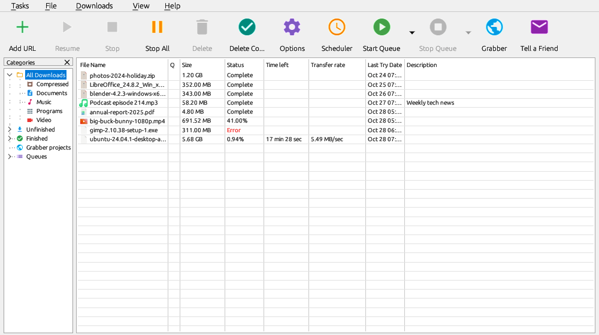

The toolbar holds the common commands, the category tree on the left sorts your downloads, and the list on the right shows each download's state.

Right-click the toolbar to choose large or small buttons, the style (Modern, Classic or NDM Style), a custom toolbar, and which buttons are shown. See Customizing NDM.
The tree on the left shows All Downloads, Unfinished and Finished, each split into Compressed, Documents, Music, Programs and Video. A category has its own file extensions and its own folder, so a new download goes to the folder of its type.
Right-click a category to add, edit or delete one. Grabber projects lists your saved Site Grabber projects and Queues your queues. View → Hide categories hides the tree.
Each row shows the file name, its queue (the Q column), size, status, time left, transfer rate, last try date and description.
Closing the main window leaves NDM running in the notification area, where it goes on downloading and taking downloads from your browser. Click the icon to bring the window back. Right-click it to open NDM, start or stop the main queue, turn the speed limiter on or off, or exit.
On Linux the icon appears only on desktops that show tray icons. Without one, see The tray icon.
To quit NDM, use Tasks → Exit or Exit on the icon's menu.